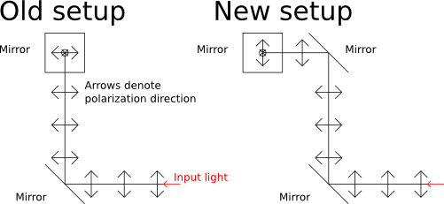

An accidental half-wave plate
Recently in the lab we made a seemingly minor change to one of our microscopes that led to a minor problem that lasted for about a week. Briefly, we introduced a mirror following a periscope that raises the plane that the laser beams travel in parallel to the table. The periscope is necessary to bringthe beams out of the plane containing the beam-combining optics and into the TIRF module port on our Zeiss inverted microscope for epi-illumination.
We had introduced the mirror to give us one more degree of freedom for steering the beam, but to do so we had to move the periscope and turn one of the mirrors by 90 degrees. Unfortunately, after doing this we found that the optical power leaving the microscope objective had dropped by a factor of 10, which was insufficient to do STORM imaging.
We eventually determined that the Zeiss TIRF module contained a polarizing beam splitter that combined the laser beams with white light from another port at 90 degrees to the beam path. In the newsetup, we placed a broadband halfwave plate before the TIRF module, rotated it while watching a power meter, and were finally able to get even more power leaving the objective than with the old setup.
So what had happened to cause the decrease in power by adding another mirror, and why did introducing the halfwave plate fix the problem? As it turns out, you can rotate the polarization by 90 degrees using only a pair of mirrors to redirect the beam into a plane parallel to its original plane of travel but into a direction perpendicular to its original one. This was what we were doing before we introduced the mirror. After the new mirror was put in place, we rotated a mirror of the periscope, which effectively rotated the laser beam's polarization back into its original orientation. And, since there was a polarizing beam splitter inside the TIRF module, the new beam polarization was transmitted through the module instead of being reflected towards the objective.
The picture below describes how this can happen. Note that the final beam trajectory is in the direction pointing into the screen.

Comments
Comments powered by Disqus